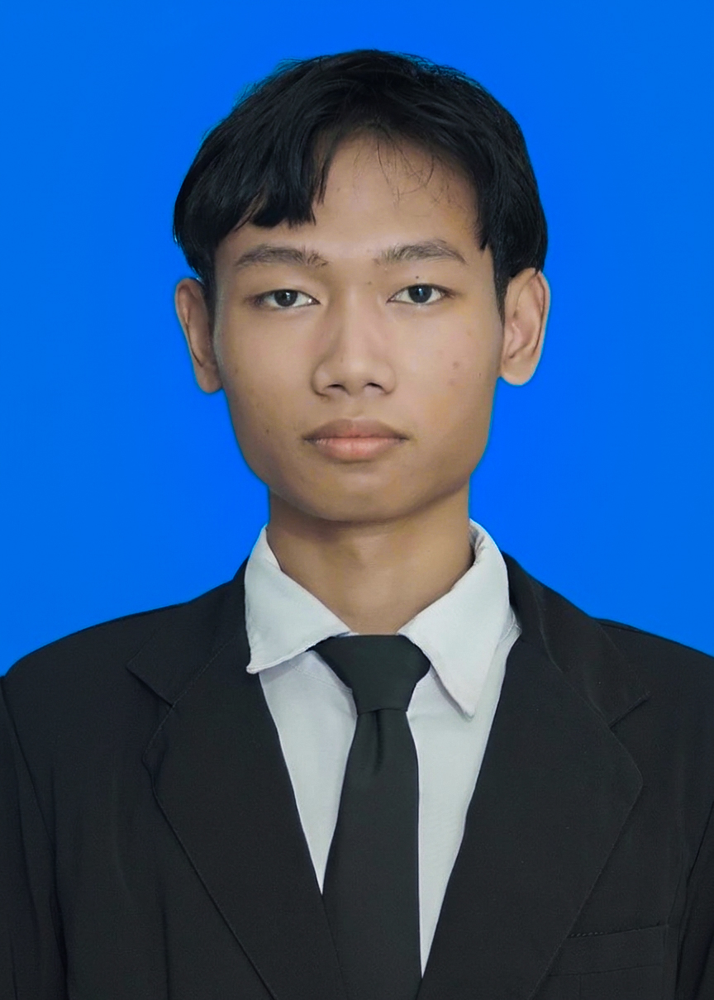

| Nama Lengkap | : Azkha Putra Junyar |
| Tempat Tanggal Lahir | : Lebak, 30 Mei 2008 |
| Jenis Kelamin | : Laki-laki |
| Status | : Mahasiswa |
| Alamat | : Jl. Flamboyan 1, Ds. Sungai Miai, Kec. Banjarmasin Utara, Kota Banjarmasin, Kalimantan Selatan |
| Telepon | : 082213616406 |
| : azkhajunyar@gmail.com |
Mahasiswa baru Jurusan Administrasi Bisnis di Politeknik Negeri Banjarmasin dengan semangat belajar dan minat mengembangkan diri di bidang akademik maupun berorganisasi. Tertarik untuk memperdalam pengetahuan di bidang pemasaran digital dan bisnis.
Fadhilah Print – Staff Produksi (Agustus 2024 – November 2024)
Membantu proses desain dan produksi cetak (brosur, banner, kemasan). Berkoordinasi dengan tim desain dan mengoperasikan mesin untuk memastikan kualitas hasil. Mengembangkan ketelitian dan manajemen waktu dalam lingkungan kerja cepat.
Teknis: Microsoft Office, Desain dasar dengan Canva/CorelDraw, Pengetahuan dasar percetakan (layout, bahan, finishing)
Soft Skill: Ketelitian dalam pekerjaan detail, manajemen waktu dan disiplin, Kerjasama tim dan komunikasi